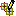

From RTSC-Pedia
 | [printable version] [offline version] | offline version generated on 02-Oct-2009 22:10 UTC |
Command - xdc.tools.repoman.sg
Interactive repository management tool
Contents |
Synopsis
| | xs xdc.tools.repoman.sg |
For a complete description of this tool's options, see the Repoman reference page xdc.tools.repoman.sg.
Description
The Repoman graphical tool is used to manage package repositories and check the validity of package paths. The left-hand pane displays archived packages and packages found in repositories. The right-hand pane shows packages in repositories that are treated as a package path. Package details can be viewed by hovering the mouse cursor over the package name, as shown in the following figures.
Duplicate packages are displayed under the package name on a separate branch, by version and date.
You can populate the "Explore Packages" pane by clicking the  button on the pane's toolbar and adding or removing directories via the dialog box. Directories are first searched for archived packages. If none are found, they are then recursively searched for package directories.
You can copy or extract any package in the Explore Packages pane by selecting it and dragging it to the "My Package Path" pane and dropping onto a repository in that pane.
To have an archived package's dependencies extracted along with it, right-click on the package and select a dependency level prior to using drag-and-drop. "Immediate Dependencies" extracts only those packages that are directly referenced by the selected package. "All Dependencies" recursively extracts all of the package's dependencies and their dependencies.
The "My Package Path Repositories" pane is initially populated with the contents of XDCPATH environment variable. You can add additional repositories by clicking the button on the pane's toolbar and specifying a repository in the dialog box that comes up. The dialog box also allows you to create new repositories (directories). Only repositories created in this manner can have packages added and deleted.
A common use for this tool is to copy or extract existing packages to create a “working” repository. You might then modify some of the packages or delete some packages. Then, you can view the “working” repository’s internal compatibility and its compatibility in relation to other repositories.
Your XDCPATH is not modified by adding or removing repositories using Repoman. However, you can copy the resulting path to the clipboard and update your XDCPATH manually.
You can remove a repository from the path by selecting it and clicking the icon, or by right-clicking on the repository and selecting the "Remove From Path" menu item.
You can move a repository up or down in the order by right-clicking it and selecting the "Move up" or "Move down" menu item.
To delete a package from a repository, select the package and click the icon, or right-click on the package and select "Delete". All of the packages' files will be deleted.
You can copy the pane’s repository list to the clipboard by clicking the icon. The list is delimited by semicolons and provided in the order they are shown in the pane.
You can check the package path for errors by clicking the icon. If any errors or warnings are generated, an error or warning icon is displayed next to the repository containing the package that generated the error and also next to the package. To see a description of the error, hover the mouse over the package's icon.
You can save repository information to a file by choosing File->Save from the menu bar. The repository, the name and version of all packages in the My Package Path pane, and the directories used to display packages in the Explore Packages pane will be saved.
You can open repository information files that were created with File->Save by choosing File->Open from the menu bar. Opening a previously saved file displays a dialog showing the repositories that package information was saved for and their state.
If all of the repositories about which information was saved are intact, you can click Done to see the usual Repoman view. If any of the repositories have been modified or deleted, you can start a restore operation for them. You may specify a different name for any repository being restored. If the repository cannot be restored completely to its original state, the operation does not create, modify or copy any directories or files. You may repeatedly retry the restore operation with different search paths.
See also
| Command - xdc.tools.repoman | Repository management tool |
| xdc.tools.repoman.sg | Client documentation for xdc.tools.repoman.sg |
| [printable version] [offline version] | offline version generated on 02-Oct-2009 22:10 UTC |

{kind=link}
{kind=link}
{kind=link}
{kind=link}
{kind=link}
{kind=link}
{kind=link}
{kind=link}
{kind=link}
{kind=link}
{kind=link}
{kind=link}
{kind=link}